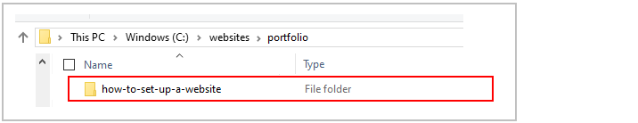
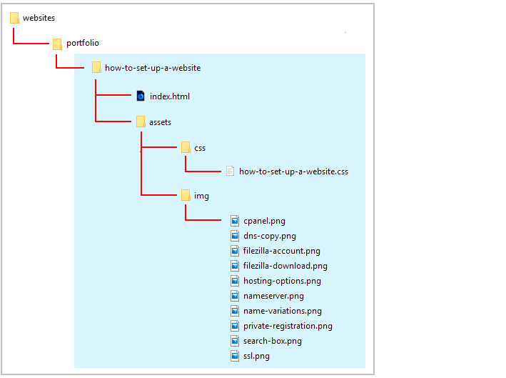
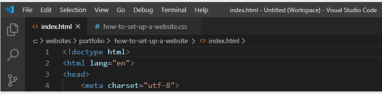
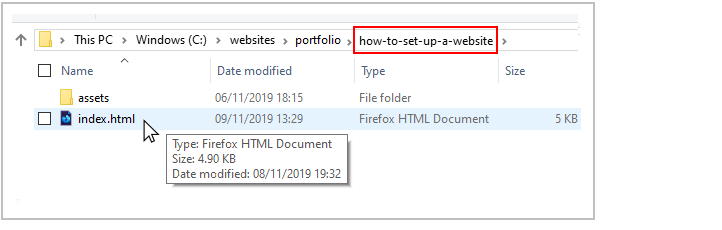
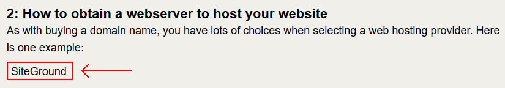
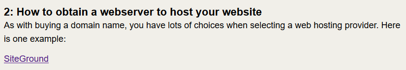
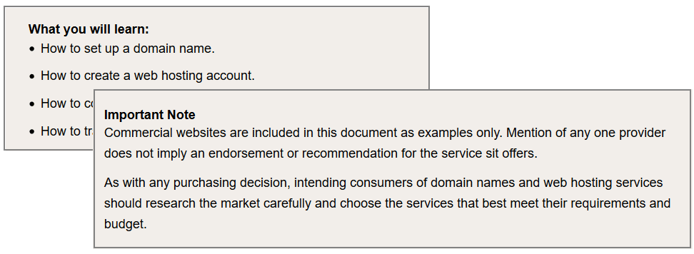
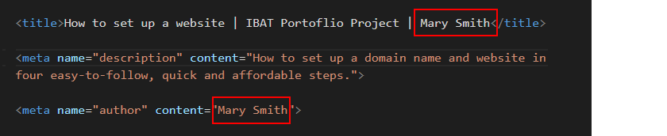
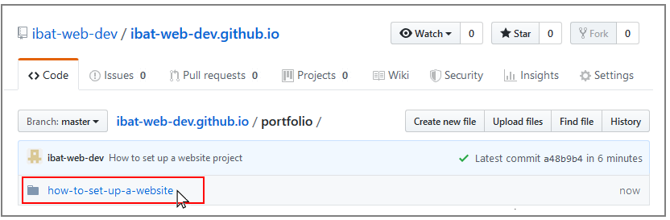
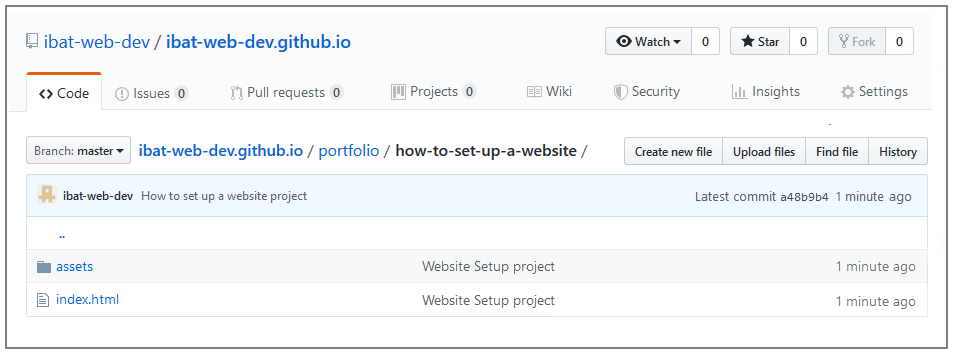

This is a responsive web page that features three levels of heading, images, background colours and highlighted <div> elements. You can display a finished version of this project on GitHub by clicking the image below.
If a sub-folder named portfolio does not already exist inside your websites folder, create it now.
Uncompress the ZIP file into your websites/portfolio sub-folder as shown below.
This will create a sub-folder named how-to-setup-a-website inside your portfolio folder.

The folders, sub-folders and files for this 'How to set up a website' project will be as shown below.

Start your text editor
Now you can begin to work with the files you have downloaded.
In Visual Studio Code or other text editor, open the following two downloaded files. The first is the web page; the second, the stylesheet:
index.html: You will find this in the main folder of your how-to-setup-a-website folder.
how-to-setup-a-website.css: You will find this in the assets/css/ sub-folder of the how-to-setup-a-website folder.

You can close any other files you may have open in your text editor.
Start your web browser
As you work with the HTML and CSS files, you will want to be able to display in your web browser the results of the changes you will be making.
In File/Windows Explorer, go to your C:\\websites\portfolio\how-to-setup-a-website sub-folder. There you can see the index.html web page for this project.
If your default web browser is Firefox Developer Edition or Google Chrome, double-click the index.html file to open it.

If not, right-click the index.html file and, from the pop-up menu displayed, choose Open with and then select either Firefox Developer Edition or Google Chrome to open the file.
Wrap the page in a <div>
The first task is to create a <div> style that will ‘wrap’ the entire page. The CSS style rules of this <div> will add some white space around the page contents so that they do ‘bleed’ not against the edges of the web browser window.
Display the stylesheet file how-to-set-up-a-website.css in your text editor.
At the top of the file, you can see the following standard lines that are typically included in a CSS file.
Click with the mouse under these standard lines, press the Enter key a few times to add some blank lines to the CSS file. Then, paste in following into your CSS file.
Switch to your HTML file. Add the opening <div> with the class name page-wrapper just after the opening <body> tag. And add the closing </div> just before the Cookie Consnet JavaScript Code.
<body>
<divclass="page-wrapper">
</div>
<!-- JavaScript for Cookie Consent Popup Message -->
Save the index.html file in your web browser. It should look as shown below.
Change the background colour of the page
Let’s change the background colour of the entire web page.
Display the stylesheet file how-to-set-up-a-website.css in your text editor.
After the end of the /* === BROWSER RESETS === */ section at the top of the CSS file, and add the following new rule.
/* ==== BODY ==== */body { background-color: #f1efe9 }
Save the CSS file and, in your web browser, view the effect on the HTML file. You should see that the background colour of the web page has changed from white to a light brown (#f1efe9).
Note that, in the CSS file, the word 'color' is written with US-style spelling: it is background-color not background-colour.
As an exercise, try setting these other values for the background-color property in your CSS file:
#884ea0 (purple)
#0057ff (blue)
#ff0d7b (pink)
#5d3137 (brown)
#fae16c (yellow}
In each case, paste in the colour code such as #ff0d7b, save the CSS file and view the result in your web browser. When finished, set the background-color back to light brown (#f1efe9).
Style the main heading
Typically, every web page has one and only one <h1> heading. To style this main heading, set the font-family, font-weight and text-align as below. For an added effect, reduce the main heading's inter-character spacing by one pixel with the letter-spacing property.
In the CSS file, under the /* === PAGE WRAPPER === */ section you previously entered, add some blank lines and then add the following.
Save your CSS file and, in your web browser, view the effect on your HTML file.
Note that the text-transform: uppercase property-value pair will cause the <h2> sub-heading to be always displayed in CAPITAL letters – regardless of the actual letter case of the text in the HTML file.
Style the paragraph text
In this step, you will set the properties of the paragraph or 'body' text of the web page.
In your CSS file, set the font-family for paragraphs to sans-serif.
For mobiles, set the line-height to 1.4 and the margin-bottom to 5%.
For desktops, set the line-height to 1.6 and the margin-bottom to 3%.
Save your CSS file and, in your web browser, view the effect on your HTML file.
Note that the line-height (inter-line spacing) for paragraphs of text is greater than the line-height for the main heading and sub-headings.
Style the bullet text
In this step, you will set the properties the text in bullet format on the web page.
In your CSS file, set the font-family for bullet text to sans-serif.
For mobiles, set the line-height to 1.4 for individual bullets and their margin-bottom is 3%.
For desktops, set the line-height to 1.6 for individual bullets and their margin-bottom is 2%.
The relevant code is shown below.
/* ==== BULLETS ==== */ul li, ol li {
font-family: sans-serif;
font-weight: normal;
font-size: calc(15px +(18-15)*((100vw - 320px)/(1600 - 320)));
}
/* Mobiles */@mediaalland (max-width:767px) {ul, ol { margin-left: 5% }
ul li, ol li {
line-height: 1.4;
margin-bottom: 3%;
}
}
/* Desktop */@mediaalland (min-width:768px) {ul, ol { margin-left: 2% }
ul li, ol li {
line-height: 1.6;
margin-bottom: 2%;
}
}
Save your CSS file and, in your web browser, view the effect on your HTML file.
Note that:
The font-size, on both desktops and mobiles, is the same for text in bullets and paragraphs.
The margin-bottom for bullets is slightly less than the margin-bottom spacing after paragraphs.
Style the images and add a new one
All the required images have already been included in your HTML file – except the last one. Let’s add that now.
Near the bottom of your HTML file, just after the paragraph that follows the <h3> sub-heading of Setting up your connection details, add this image code.
<imgsrc="assets/img/filezilla-account.png">
Next, you need to add a new class to your CSS file so that every image will have some spacing under it.
Save both your HTML and CSS files. In your web browser, view the effect on your HTML file.
Add ‘alt’ text descriptions for images
If as the result of a slow connection or other reason, an image on a web page cannot be displayed, HTML offers an attribute called alt, a short form of 'alternative.' Use this to provide a short description of the undisplayed image. Let's add alt text for each of the ten images on your web page.
In your HTML file, the first image is named private-registration.png. Add the following alt text value.
Add the following alt text descriptions for the remaining images.ssl.png
alt="SSL security certificate"search-box.png
alt="Choosing a domain name"name-variations.png
alt="Domain name variations"hosting-options.png
alt="Web hosting options"cpanel.png
alt="Web hosting control panel"nameserver.png
alt="Nameserver examples"dns-copy.png
alt="Connecting domain with web hosting"filezilla-download.png
alt="FileZilla FTP client"filezilla-account.png
alt="FileZilla site connection details"
Add the external hyperlinks
The next step is to add external hyperlinks (links to pages of other websites) to your web page.
Near the top of your HTML file, under the sub-heading Domain names: Choose private registration, you can see the word 'WHOIS'.
Enclose this single word within a hyperlink as shown below.
<h3>Domain names: Choose private registration</h3>
<p>Under Internet rules, every domain name must be associated with a real-world name and address. The online system that records the owners of domain names is known as <ahref="https://whois.icann.org/en"target="_blank">WHOIS</a>.</p>
Your web page will now look as shown below. Verify that clicking the word 'WHOIS' opens the website in a new tab of your web browser.
Under the sub-heading 1: How to choose and buy a domain name, you can see on a single line with the company called 'Namecheap'.
Enclose the word 'Namecheap' within a hyperlink as shown below.
Your web page will now look a shown below. Verify that clicking the word 'Namecheap' opens the website in a new tab of your web browser.
Note that the hyperlink is inside the opening and closing paragraph tags.
<p><ahref= ... >Namecheap</a>/<p>
Under the sub-heading 2: How to obtain a webserver to host your website, you can see on a single line with the company name 'SiteGround'.

Enclose the word 'SiteGround' within a hyperlink as shown below.
Your web page will now look a shown below. Verify that clicking the word 'SiteGround' opens the website in a new tab of your web browser.

Again, note that the hyperlink is inside the opening and closing paragraph tags.
<p><ahref= ... >SiteGround</a>/<p>
In your web browser, scroll down the web page to the final section named 4: How to upload files to your website. Here you will add to more hyperlinks. Each one will link to the same external website. The first hyperlink will enclose the word 'FileZilla'; the second, the image of the home page of the FileZilla website.
Enclose the word 'FileZilla' within a hyperlink as shown below.
<p>Another option is for transferring files is to use a software program called an FTP client. The three letters stand for File Transfer Protocol. A popular FTP client, with free-to-use versions for Windows, Mac and Linux is <ahref="https://filezilla-project.org/"target="_blank">FileZilla</a>.</p>
Next, enclose the image within a hyperlink as shown below.
Save your CSS file and, in your web browser, view the effect on your HTML file. Both the hyperlinked word and image should now be 'clickable.'
Style the introduction paragraph
In this section, you will style the first paragraph of the web page that is located just under the main <h1> heading.
In your CSS file, you will create a new class named .box-introduction, and:
Make the introduction slightly narrower (90%) than the page content that follows it.
Centre the introduction text using the center value of the text-align property.
Add a decorative border-bottom under the introduction to separate it visually from the text that follows it.
Set the font-family to serif.
Set the font-style to italic.
Increase the font-size for both desktop and mobile screens.
You can see the 'before' and 'after' appearance of the introduction block below.
Here are the steps:
In the index.html file, wrap the first paragraph of text with a <div> block named box-introduction.
<divclass="box-introduction">
<p>Follow the steps in this short guide to discover how you can purchase a domain name and a web host. You will also learn how to link your chosen domain with the web hosting
computer than stores your web pages.</p>
</div>
Switch to the CSS file and add the following two selectorsof code. The first will style the <div> text block as a whole by giving it a width, and a solid and coloured bottom border. The second is for the paragraph text within the <div> block.
Save your CSS file and, in your web browser, view the effect on your HTML file.
Style the ‘What you will learn’ and ‘Note’ boxes
You will now style two blocks of text, one near the top and at second at the bottom of your HTML file. In each case, you will wrap them in a <div> with a class name of box-highlight.
The first block begins the h4 sub-heading of What you will learn:, followed by four 'How to...' bullets of text.
The second block, at the very end of the web page, begins with the h4 sub-heading of Important Note, followed by two text paragraphs.

Here are the steps:
In the index.html file, wrap each <h4> sub-heading and the text that follows it with box-highlight class.
<divclass="box-highlight">
<h4>What you will learn:</h4>
<ul>
<li>How to set up a domain name.</li>
<li>How to create a web hosting account.</li>
<li>How to connect your domain name to your web host.</li>
<li>How to transfer files between your computer and your web host.</li>
</ul>
</div>
<divclass="box-highlight">
<h4>Important Note</h4>
<p>Commercial websites are included in this document as examples only. Mention of any one provider does not imply an endorsement or recommendation for the service sit offers.</p>
<p>As with any purchasing decision, intending consumers of domain names and web hosting services should research the market carefully and choose the services that best meet their requirements and budget.</p>
</div>
Switch to the CSS file, create the .box-highlight selector and add the following style rules.
You have given the boxes a background-color to highlight them.
You have used the margin property to create vertical spacing before and after the highlighted blocks.
You have used the padding property to create spacing within all four sides of the highlighted block. As a result, the text does not 'bleed' or spread all the way to the left and right and top and bottom edges of the block.
Save your CSS file and, in your web browser, view your HTML file. For both the first and second highlighted blocks, you can see two spacing issues that need to be corrected.
There is too much vertical spacing at the top edge of the two blocks. This is because the <h4> sub-heading style has a margin-top spacing of 2% for desktops and 6% for mobiles. When you display the web page, the web browser calculates the total top edge spacing by adding the margin-top spacing of the h4 sub-heading to the padding-top value of the highlighted box.
There is too much vertical spacing at the bottom edge of the two blocks. This is because the <p>, <ul> and <li> selectors all have margin-bottom values. Again, the web browser is adding these values to the padding-bottom value of the surrounding box to calculate how much space it should display at the boxes' bottom edge.
To fix these vertical spacing issues, add the following to your CSS file:
The h4 sub-heading has a margin-top of 0 whenever it is inside a .box-highlight block – but nowhere else. All other h4 sub-headings are unaffected.
A block of bullets created with the <ul> selector has a zero bottom margin whenever it is inside a .box-highlight block. Blocks of bullets located elsewhere on the web page are unaffected.
The :last-child attribute of the <p> and <li> tags means that the last bullet or last text paragraph within a .box-highlight will have a margin-bottom of 0.
As a result of your changes, the top and bottom vertical spacing of .box-highlight is now set only by the padding-top and padding-bottom values of that selector.
Save your CSS file and, in your web browser, view the effect on your HTML file. The two highlighted boxes should now look as shown below.
Update the meta tags
In the <head> of your index.html web page, within the <title> and <author> meta tags, you can see the name 'Mary Smith.'
Replace this with your own name, and save the index.html file.

Update the Google Analytics ID
Near the top of your HTML file, just before the closing </head> tag, you can see a sample Google Analytics Tracking Code.
Each Google Tracking Code has a unique ID in its first and last line. Replace the sample Google Tracking ID with your own Google Tracking ID. The instructions for viewing your website’s unique Google Tracking ID are here.
When finished, save the index.html file.
Update the privacy pop-up code and message
You need to edit the ‘pop-up‘ privacy code and message to your web page.
Within the <head> at the top of your index.html file, you can see a link to the stylesheet for the privacy pop-up message.
At the bottom of your web page, just before the closing </body> tag, you can see the JavaScript code for the privacy pop-up message.
Near the bottom of the JavaScript code, you can see the web address of the privacy page. Change this to the web address of your privacy page.
When finished, save the index.html file.
You can find the instructions for generating the JavaScript code here.
Validate your HTML file
To check your HTML is correct, use the official W3C Markup Validation Service. Follow these steps.
Copy and paste your HTML file into the box named Enter the Markup to validate.
Click the Check button.
If you see any errors, return to your index.html file, fix the errors, save the file, and copy the entire file again.
In the HTML Validator, click the Back button of your web browser to again display the Validate by Direct Input tab. Click once in the tab and paste in your corrected HTML file. Your new, pasted-in file will replace the earlier version. Finally, click the Check button.
Validate your CSS file
To check your CSS is correct, use the official W3C CSS Validation Service. Follow these steps.
Copy and paste your CSS file into the box named Enter the CSS you would like validated.
Click the Check button.
If you see any errors (other than those related to the fluid typographic equation, as shown below), return to your how-to-set-up-a-website.css file in your text editor, fix the errors, save the file, and copy the entire file again.
In the CSS Validator, click the Back button of your web browser to again display the By direct input tab. Click once in the tab and paste in your corrected CSS file. Your new, pasted-in file will replace the earlier version. Finally, click the Check button.
Upload your project to GitHub
The final step is to upload your project to GitHub.
All the files for this project are in a sub-folder named how-to-set-up-a-website of your websites/portfolio folder.
So you will need to upload this how-to-set-up-a-website sub-folder, which contains both files and other sub-folders, to your account on GitHub.
Open a new tab in your web browser and go to GitHub.com. If you are not already signed in to your GitHub account, sign in now.
On your GitHub home page, click the name of the repository ('repo') that holds your web pages. Its name will look as follows, where username is your chosen username on GitHub.
username.github.io
The next GitHub screen displayed should look as follows. Click on the portfolio folder.
On the next screen displayed, click the Upload files button.
In File/Windows Explorer on your computer, display your portfolio folder and then drag-and-drop the how-to-set-up-a-website folder to the GitHub tab in your web browser.
After uploading the how-to-set-up-a-website folder, scroll down to the bottom of the GitHub screen, enter a short message in the Commit changes box, click the Commit changes button, and wait for the upload to complete.
The portfolio folder of your website repo on GitHub should now contain a sub-folder named how-to-set-up-a-website. Click on this folder.

The how-to-set-up-a-website folder should contain both the index.html file and the assets sub-folder.

Click on the assets sub-folder to view its contents. You should see that it contains the two sub-folders named css and img.
Within the assets sub-folder, click on the css sub-folder. Check that it contains the stylesheet file.
Within the assets sub-folder, click on the img sub-folder. Check that it contains all the image files.
Your web page is now published on GitHub at a web address similar to the following, where username is the username you have chosen for your GitHub account:


 Enclose this single word within a hyperlink as shown below.
Enclose this single word within a hyperlink as shown below.

 Enclose the word 'Namecheap' within a hyperlink as shown below.
Enclose the word 'Namecheap' within a hyperlink as shown below.
 Note that the hyperlink is inside the opening and closing paragraph tags.
Note that the hyperlink is inside the opening and closing paragraph tags.
 Enclose the word 'FileZilla' within a hyperlink as shown below.
Enclose the word 'FileZilla' within a hyperlink as shown below.


 Near the bottom of the JavaScript code, you can see the web address of the privacy page. Change this to the web address of your privacy page.
Near the bottom of the JavaScript code, you can see the web address of the privacy page. Change this to the web address of your privacy page.